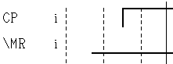
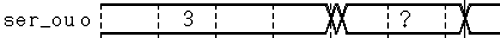

Displaying unknown state (blank)
The Timing Diagram has an unknown state which is used when it cannot locate a fixed drive action. For example, a device cycle may not have a fixed drive action until the tenth test system cycle; the Timing Diagram remains blank (unknown state) until the tenth test system cycle where the fixed drive action is located.
When you are viewing the middle of a test, the last fixed drive action may be several test system cycles back. If the previous fixed drive action is greater than 32 cycles from the point that you are viewing, the Timing Diagram will display the unknown state.
After either a change timing (CTIM), or a change level (CLEV), if no Break Vectors are recorded, then the last action after the transition will be that of the Break Cycle. As no Break Cycles are recorded, then the Timing Diagram will display an unknown state until the next fixed drive action.
The figure below shows how the Timing Diagram represents an unknown state for individual pins.
In each of the examples shown, the diagram is left blank until data is available.

For groups of pins, if all the pins in the group are in the unknown state, then nothing is displayed until information is available. However, if only some pins are in the unknown state, then a question mark is displayed instead of the hexadecimal value for that group.

Functional changes
- Introduced before SmarTest 6.3.2